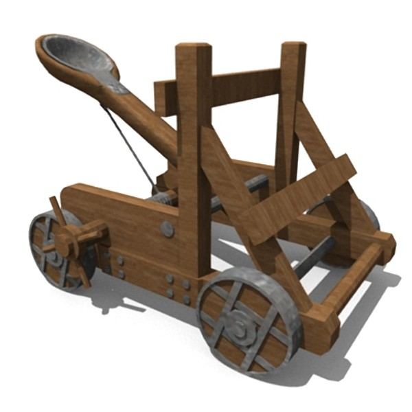
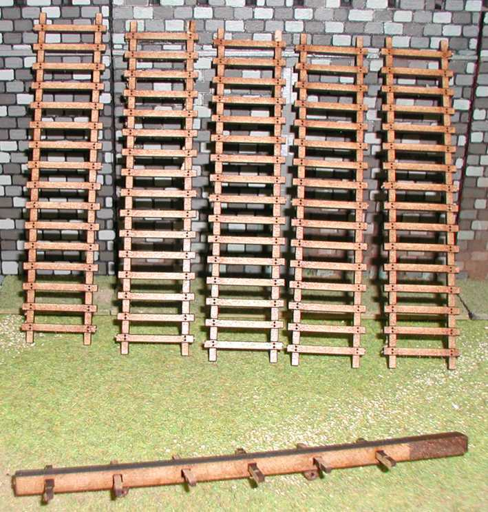
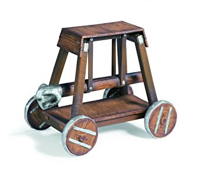
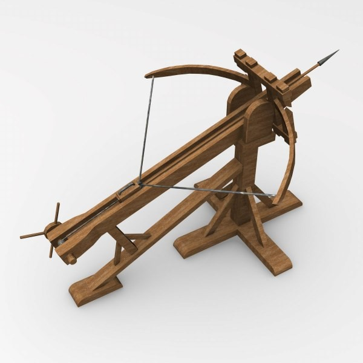
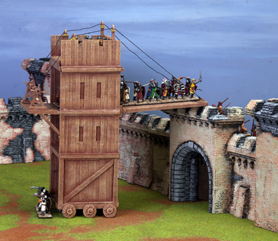
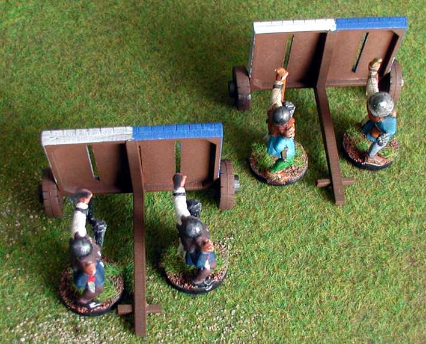

Besieging armies often used a wide variety of siege engines to help conquer castles and cities, including, but not limited to, breaching towers, ladders, battering rams, and mangonels.
These devices had a range of uses, from scaling and destroying walls, to disturbing the inhabitants of the castle. They were often made at the site of the siege by an accompanying workforce of engineers and carpenters, using wood and other materials found in the surrounding areas of a targetted castle.
| Device | Purpose | Details | |
|---|---|---|---|
|  | Mangonel | Used to launch stones or other projectiles. | Usually used in field battles, they were often used in sieges to destroy walls. |
|  | Siege Ladder | Used to scale walls. | Also called an escalade, they were the most obvious choice for attacking walls, but the most dangerous. |
|  | Battering Ram | Used to bring down gates or walls. | Operated by several people to knock gates open, or less often, to bring down walls. |
|  | Ballista | Used to shoot projectiles at the defenders. | More accurate than mangonels. They used torsion to shoot projectiles like a giant crossbow. |
|  | Breaching Tower | Used to scale and hold positions on walls | Safer than siege ladders and had wheels, a breaching tower was better constructed, usually carrying archers to protect the assailants. |
|  | Mantlets | Used to protect troops from projectiles. | A large shield. They provided cover for archers on the ground, and were light enough to be moved when required. |
There is one specific siege engine I want to explore further: the Trebuchet.
Trebuchets are large, mobile siege engines. Earlier variations of the trebuchet often used manpower to pull a rope attached to an arm and pivot, but later Medieval trebuchets used a counterweight and lever mechanism to launch a projectile. It first appeared in China, and deployed primarily in the Middle Ages all across Eurasia. Trebuchets are made primarily with wood, often reinforced with metal, leather, and rope. A trebuchet requires a team of people to be used effectively, but some can easily launch a 90kg projectile over 300m.
That wasn't a typo.
The ability to cast such a large projectile over such a distance wasn't surpassed until gunpowder made it possible.
The projectiles of trebuchets were often large stones, but could be replaced with other missiles such as casks of burning tar, sharp wooden poles, or even dead animals.
Trebuchets were often built on the spot in a siege, as they were much too large to move around. Commanders determined if trebuchets would be used for a siege, and how many, which the engineers and their workers would construct on site.
{kind=link}
{kind=link}